Foundations · City Composition Pass
Production-bundle visual captures for the compact continuous city, Town Center, monorail, construction, and emulated mobile viewports. See metrics.json for browser, layout, and WebGL diagnostics. These captures are inspection evidence, not a browser-test gate.
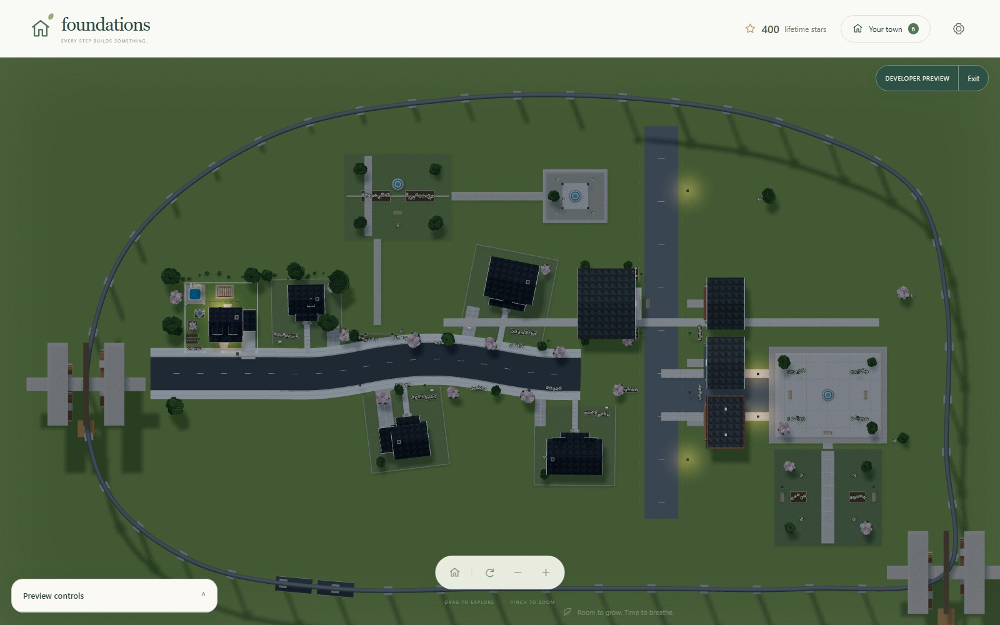
whole-city-overhead
Overhead view of the continuous developed city, including the original home, residential neighborhood, Town Center, civic green, and monorail loop.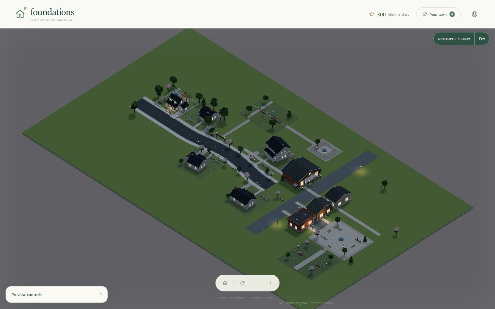
whole-city-normal-angle
The developed continuous town at normal isometric framing, without the elevated loop obscuring the homes and civic spaces.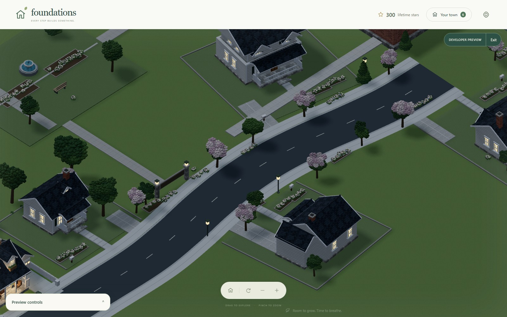
chapter-two-residential-street
The unchanged curved Chapter 2 residential street, separated homes, gardens, and connected frontage.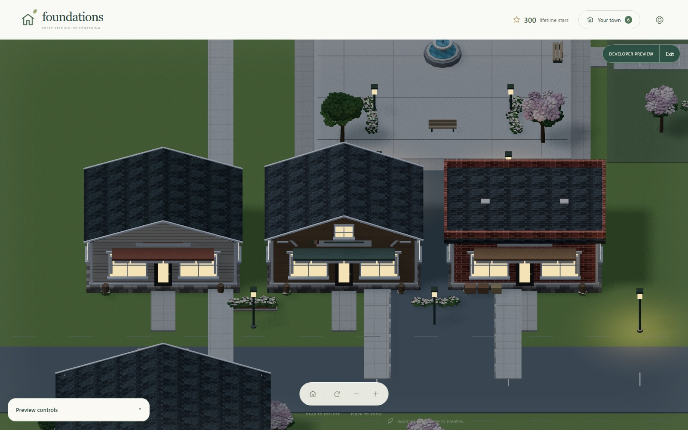
town-center-main-street
Compact Main Street frontage with distinct bakery, bookshop, and market silhouettes beside the connected street.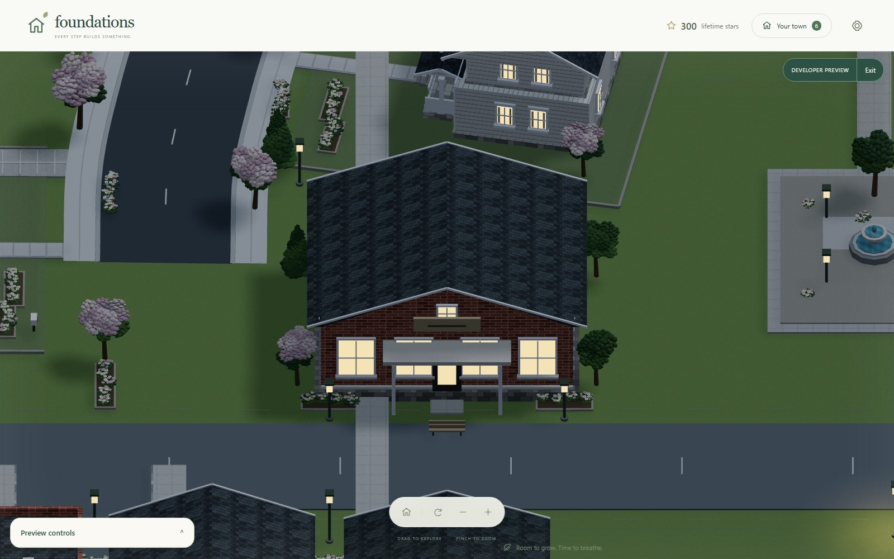
town-center-library
Community Library with its short direct sidewalk connection to Main Street.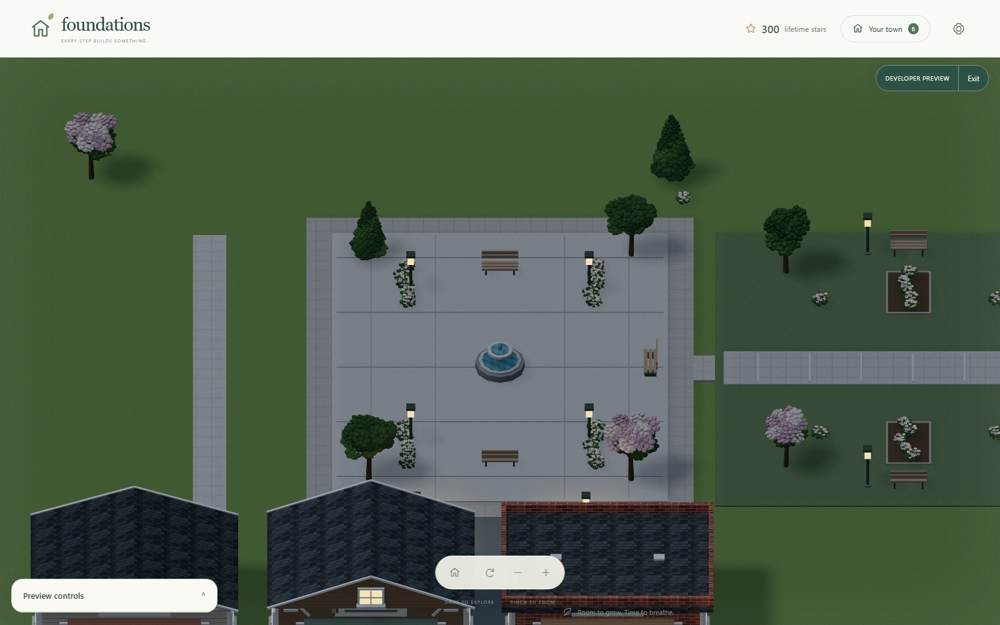
town-center-civic-plaza
Civic square terminating a short side street and joining the landscaped greenway.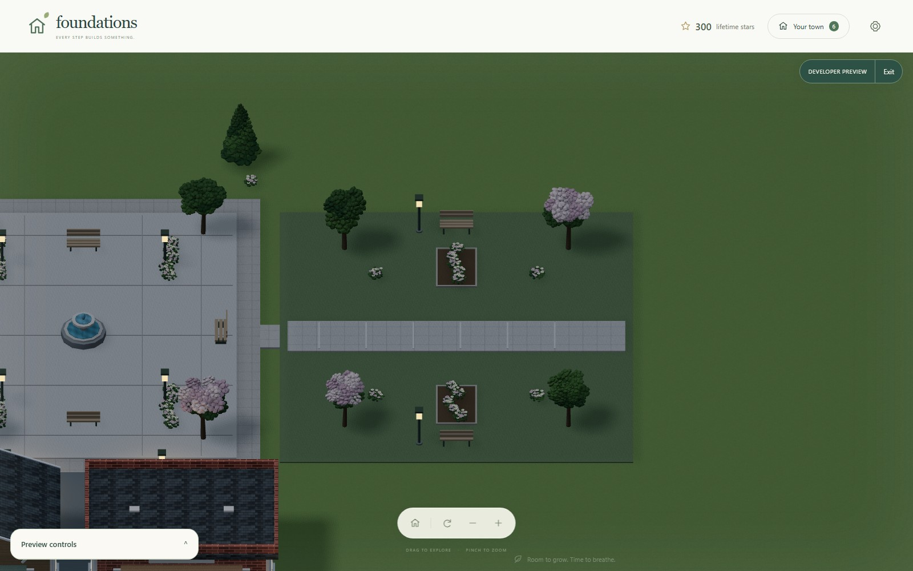
town-center-greenway
The public green joined directly to the civic plaza.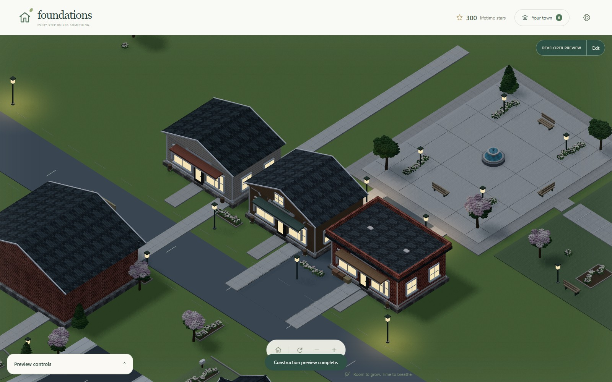
town-center-assembly-mid
Mid-construction state of the Main Street assembly.town-center-assembly-skipped
Completed Main Street after skipping its construction animation.town-center-assembly-complete
Main Street after the full construction animation completes.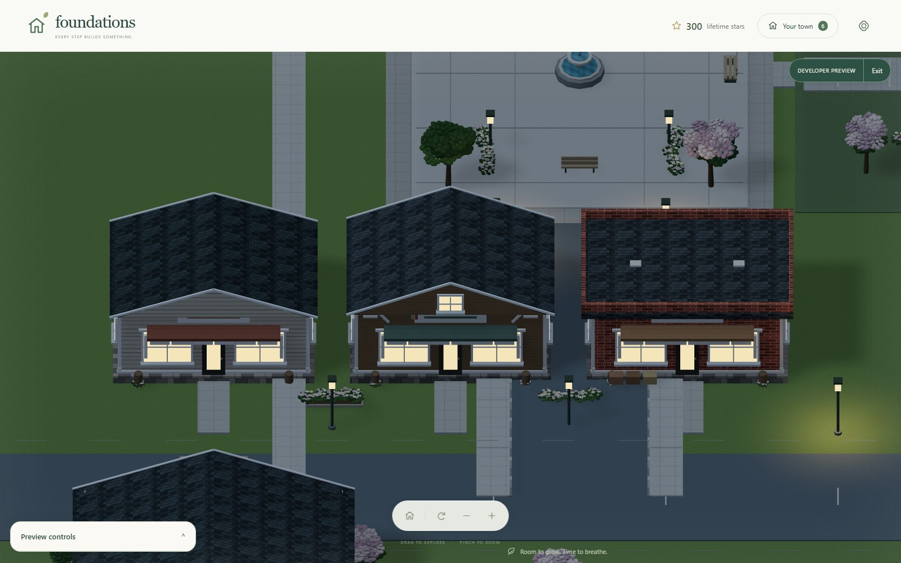
town-center-night
Night lighting on connected storefronts, lamps and windows.monorail-full-loop-overhead
Compact monorail loop framing the continuous neighborhood and Town Center, with both stations near pedestrian destinations.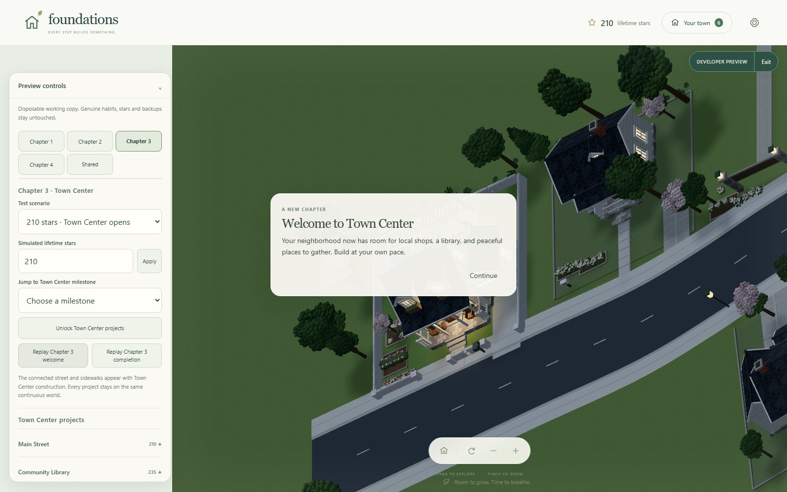
town-center-chapter-transition
Chapter 3 welcome transition shown over the live city.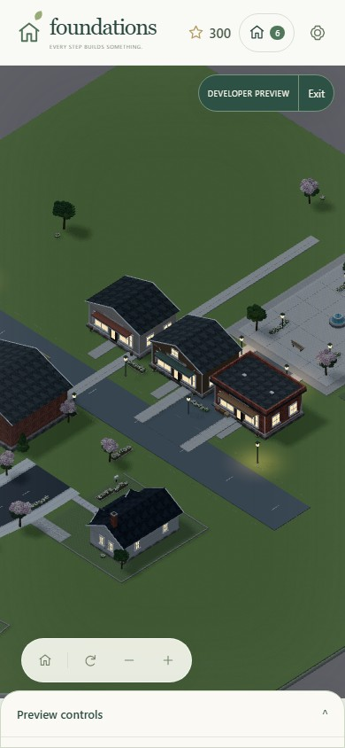
mobile-portrait
town-center scene at emulated portrait viewport.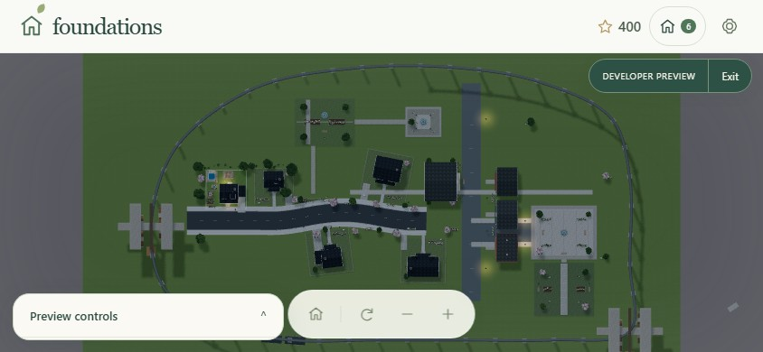
mobile-landscape-mobile
monorail-city scene at emulated landscape-mobile viewport.